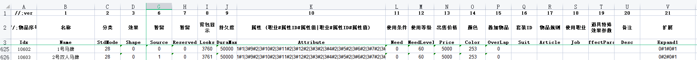

马牌参数：
变量：<$HORSE>装备位置：15
==========================================================================================
1、DB段详情参数：
stdmod -------- 28 马牌
source -------- 1：支持双人骑，0：不支持双人骑，
仅当stdmod=28并且Anicount大于0时有效
cfg_item.xls V(21)列Expend1原参数为首饰盒，扩展2个马牌参数，参数2马牌特效，参数3马牌翅膀特效。
如：0#1#0#1
参数1：参数=0
参数2：马外观=1：主宰者战马， 2：主宰者灵虎
（3-5为Horse2.wzl单人马匹，320张一个性别，640张一组，自动区分男女，如设置3读取Horse2.wzl文件的0-639张图片）
扩展马的素材20-99，文件名：L-Horse.wil 读取为20-28；L-Horse1.wil 读取为29-49；L-Horse2.wil
读取为50-99
参数3：马外观特效编号=1-6为horse2.wzl（图标编号：1920-3839）中马的6组特效，0为不使用特效
参数4：马上人物的翅膀特效=0：不显示翅膀特效；1：显示翅膀特效
只对官方主宰者灵虎有效(stdmod=28; Horse=2)
参数5：马上人物衣服外观 参数5=
0或空显示马牌自带衣服外观，参数5=1表示按参数2显示衣服外观，参数5 =
2表示按Shape值显示马上衣服外观
参数6：扩展马上人物衣服素材 文件名：L-HumHorse.wil
读取为0-49；L-HumHorse1.wil为50-99；L-HumHorse2.wil 读取为100-149；.......L-HumHorse6.wil
读取为300-349；
参数7：扩展马上人物发型素材，文件名：L-HairHorse.wil 读取为0-14，15种发型
扩展马读取规则：只有当参数2=(20-99)时，参数6和参数7才有效。

2、QF段触发：
@UPHORSE：上马触发
[@UPHORSE]
#if
#act
Sendmsg 7 您的坐骑成功被召唤！
break
-------------------------------------------------------
@DOWNHORSE：下马触发
[@DOWNHORSE]
#if
#act
Sendmsg 7
您的坐骑成功被收回！
break
-----------------
2、上下马脚本命令：
[@UpOrDownHorse]
#if
#act
UpOrDownHorse
Sendmsg 7
OK！
break
==========================================================================================
骑马时候声音（程序包内第三方补丁文件内查看）
==========================================================================================
3、相关操作
邀请方式：
鼠标移至身边3格内的不在坐骑状态下的玩家，点击以下快捷键，即可进行邀请。
邀请命令：CTRL+L（固定键）
下马命令：CTRL+G（邀请人和被邀请人共用）
双人坐骑状态：
1.
基础设定：
走路（鼠标左键）：1格；
跑步（鼠标右键）：3格。
双人坐骑状态下无法攻击、不可接水、不可拾取、不可挖宝，不可进行有起手动作的动作。如：不可逗宠物，不可释放除烟花、璀璨烟花、传情烟花和周年庆礼炮之外的其它烟花等。（包含邀请人和被邀请人）
2.
邀请人坐骑状态：
邀请人坐骑状态遵循单人坐骑状态所有条件（除不可组队）。
3. 被邀请人坐骑状态：
1）
被邀请人可进行状态：吃药、小退、大退、下马、聊天五种操作；
2） 其他操作由邀请人进行决定。
4.
伤害计算：双人坐骑为1格，双人共用格子。被攻击的伤害全部施放在邀请人身上，被邀请人为保护状态。
5.
状态展示：所有双人坐骑状态，遵循邀请人坐骑状态。如，心法状态判断邀请人是否开启心法，中毒判断邀请人是否中毒等。
6.
被邀请人界面：在双人坐骑状态下，被邀请人界面出现下马按钮，为一个马按钮状，点击可直接下马，同时有悬浮提示：点击按钮可直接下马。
7.
双人骑外显：双人坐骑时，邀请人显示坐骑后方，被邀请人显示坐骑前方。
8.角色名显示：
在双人坐骑状态下，不显示其他称号，只显示名字。邀请人名字显示在后部，被邀请人名字显示在前部。
9.
血条显示：
在双人坐骑状态下，只显示邀请人血条和内功条，被邀请人血条不显示。
10.禁止相关：
双人坐骑状态下，点击传送相关按钮和使用传送石进行传送，将无反应。双人骑状态，邀请人和被邀请人无法进行组队。
下马设置：
1.
被邀请人单独下马：
被邀请人快捷键下马：CTRL+G，或点击操作界面下马按钮。
小退单独下马
大退单独下马
被邀请人死亡下马
2.
共同下马：
邀请人快捷键下马：CTRL+G
邀请人小退
邀请人大退
邀请人死亡
===========================================================================================================================================
单人骑马介绍：
上马方法：
1） 上马必须将马牌装备在相应装备位当中；
2）
装备好之后，在F12当中设置快捷键（若未设置按照默认快捷键ctrl+g）；
3） 使用快捷键召唤坐骑；
下马方法：(上马和下马命令在引擎游戏命令处查看)
1. 主动下马：
1） 大退下马
2）
小退下马
3） 使用快捷键下马
2. 被动下马：
1） 死亡下马
2） 马牌放入包裹当中：下马
坐骑状态下，可进行的动作：
1） 走：每步1格。鼠标左键进行操作；
2） 跑：每步3格。鼠标右键进行操作；
3）
可进行吃药；
4）可进行自动开盾；
5） 可面对面交易、丢弃物品；
6） 可点击NPC。
7）可以释放烟花。
坐骑状态下，不可进行的动作：
1） 无法攻击其他目标；
2） 不可接水；
3） 不可拾取
4）
不可挖宝；
5） 不可挑战；
6） 骑乘状态下，不可进行有起手动作的动作。。
===========================================================================================================================================
功能:
检测是否骑马状态
格式:
CheckOnHorse
#IF
CheckOnHorse
#SAY
你正在骑马中....
===========================================================================================================================================
地图参数
NOHORSE
禁止骑马
===========================================================================================================================================
用户命令Command.ini
@DisableHorseInvite=禁止邀请上马
默认禁止邀请上马，用户使用命令可允许与禁止。
===========================================================================================================================================
M2客户端控制->页面显示增加复选框->显示上马/下马按钮
修改上马时间命令
SETUPHORSETIME
上马时间默认3秒，等于0表示立即上马
SETUPHORSETIME
时间(秒)
[@main]
#IF
#ACT
SETUPHORSETIME 2
SENDMSG 7
您的上马时间已修改为2秒
骑马跑步触发:
[@HorseRun]
#IF
#ACT
SENDMSG 7
骑马跑步触发